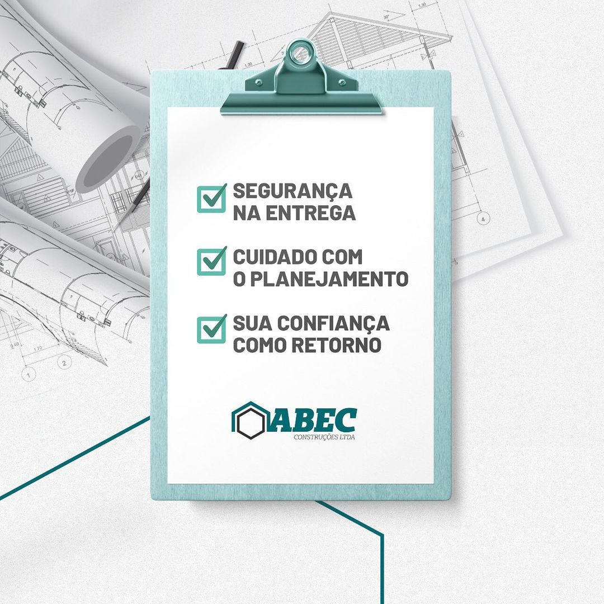
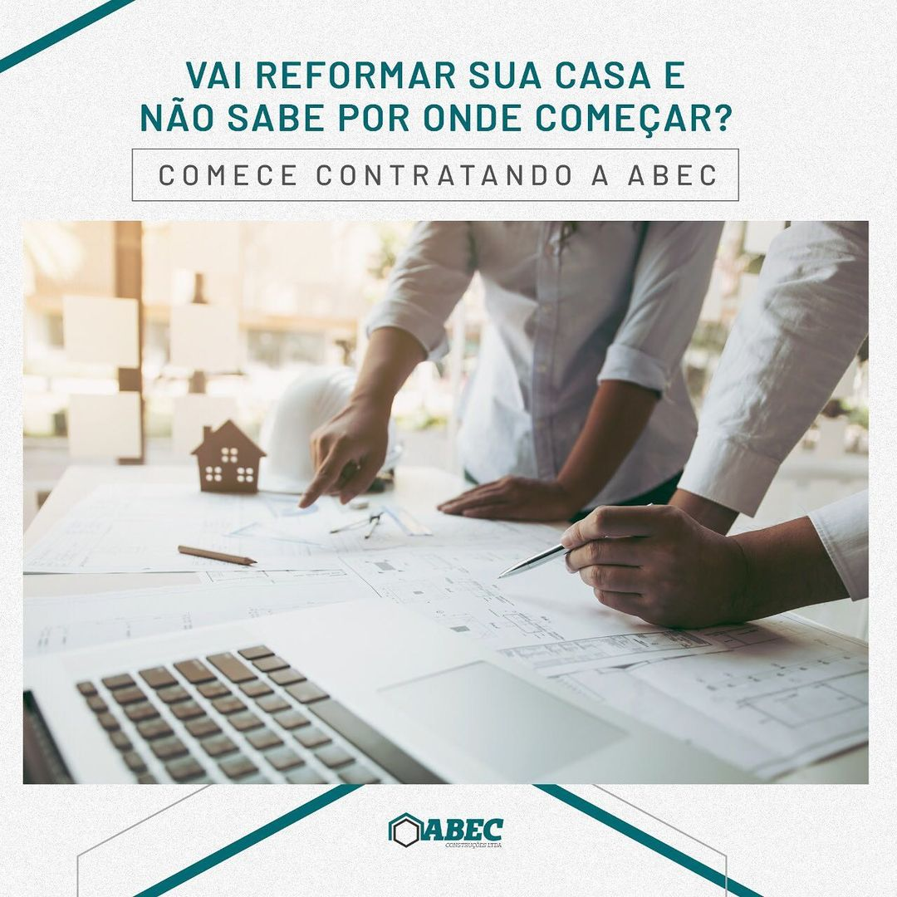
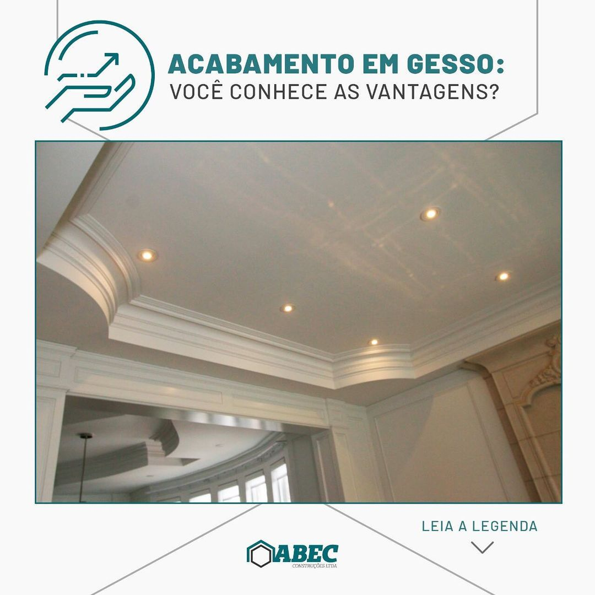
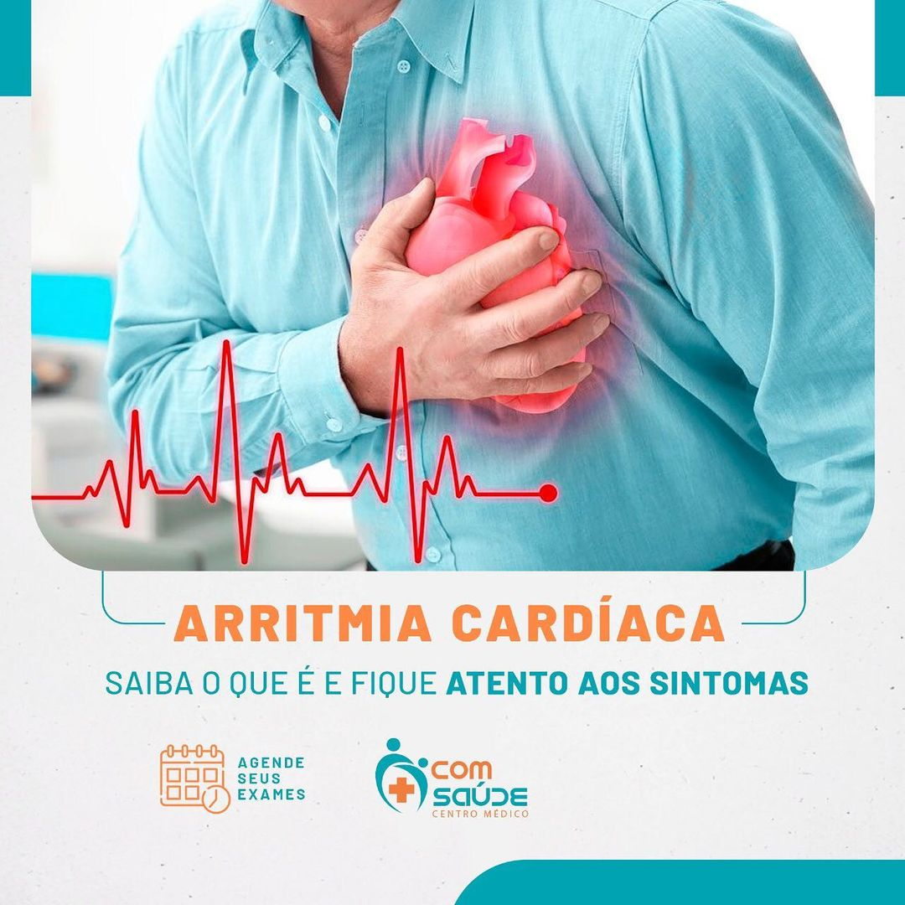
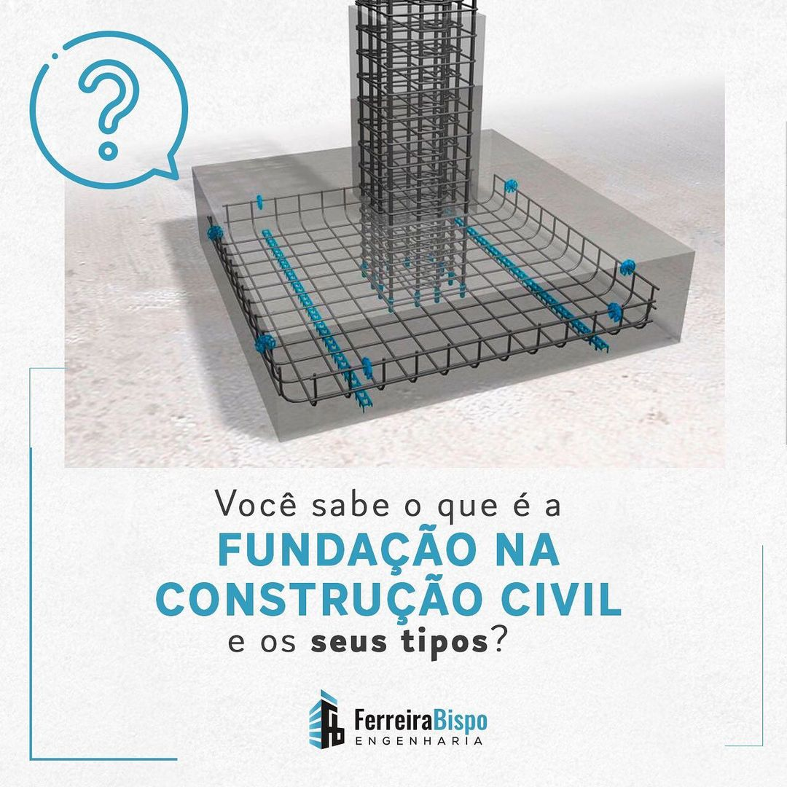

Vita Psicologia
Todo mundo quer se sentir acolhido e prestigiado, não é mesmo? E no relacionamento isso não é
diferente. Quando aceitamos nos unir a alguém, deixamos muitas atitudes de lado pelo bem e
fortalecimento da união. Não quer dizer que devemos anular nossas vontades para agradar nosso
(a) parceiro (a), mas devemos pensar em como juntar o desejo próprio com a satisfação comum do
casal.
A empatia, por exemplo, é um exercício diário na relação. Vocês se escolheram não só pelo amor,
mas porque acreditam que juntos podem fazer a diferença na vida um do outro. Essa cumplicidade
irá ajudar vocês a compreender a dor, insatisfação e qualquer sentimento ruim que poderão
compartilhar. Será nos momentos de dificuldade que irão buscar, em conjunto, caminhos para
superar a adversidade.
Com isso, devemos considerar também, que o incentivo, a palavra de conforto e toda declaração de
apoio, verbalizada ou apresentada através de ações, terá o poder de contribuir com a evolução e
o fortalecimento dessa relação.

Abec Construções
Como sempre pautamos em nossos conteúdos, o nosso trabalho só existe porque você confia em nossa
gestão de obras; em nosso corpo técnico e em nossa capacidade para uma boa execução para o seu
projeto.
Atendemos pessoas que têm sonhos, e temos o dever de tornar realidade.
A segurança na entrega, o cuidado com o planejamento e sua confiança como retorno é o que
impulsiona nosso cotidiano.
Venha para Abec. Conheça nossos serviços e veja que somos a melhor opção para a sua obra!
Contate-nos pelo link da bio.
#abec #abecconstruções #construtora #engenharia #engenhariacivil #arquitetura #construção
#tiposdevidros #vidros #arquitetura #obras #construçãoresidencial #maceió #mcz #construtoramcz
#maceioalagoas

Abec Construções
Está precisando fazer uma reforma em casa, mas não sabe o que fazer? Entenda que essa tarefa não
é fácil e exige dedicação e organização.
Diferentemente da construção, onde a obra começa do zero, em uma reforma contamos com a
estrutura da casa. Com isso, a finalidade da ação é moldar essas formas com as características e
interesses do dono.
Desta forma, é necessário alinhar algumas etapas importantes, que farão a diferença nesse
momento e ainda poderão ajudar a economizar, sem perder a qualidade investida, evitando também,
prejuízos.
Por isso, contrate-nos! Estamos esperando você para tirar esse sonho do papel.
Entre em contato pelo link da bio.
#abec #abecconstruções #construtora #engenharia #engenhariacivil #arquitetura #construção
#tiposdevidros #vidros #arquitetura #obras #construçãoresidencial #maceió #mcz #construtoramcz
#alagoas

Abec Construções
A utilização do gesso para revestimentos, divisórias e rebaixamentos, tem sido cada vez mais
frequente na construção civil. Isso ocorre devido à extrema versatilidade do material. Mas será
que existem outros benefícios para essa escolha ser ainda mais recorrente?
Separamos 5 vantagens que fazem do gesso, o material ideal para uso em reformas e construções.
📍Fácil de encontrar: obtido através da calcificação da rocha gipsita, muito abundante no
Brasil.
📍Rápida e simples aplicação: Pode ser utilizado em única etapa e possui boa aderência às
superfícies.
📍Facilita a organização na obra: não demanda muito espaço para estoque.
📍Custo-benefício: acessível/ exige pouca mão de obra/ possui menor desperdício.
📍Belo efeito estético: semelhante ao efeito da massa corrida, deixa a superfície lisa, branca e
pronta para pintura.
#abec #abecconstruções #construtora #engenharia #engenhariacivil #arquitetura #construção
#tiposdevidros #vidros #arquitetura #obras #construçãoresidencial #maceió #mcz #construtoramcz
#alagoas

Com Saúde Centro Médico
Arritmia cardíaca é qualquer alteração no ritmo das batidas do coração, que pode fazer com que
ele bata mais rápido, mais lento ou simplesmente fora de ritmo. A frequência de batimentos
cardíacos em um minuto considerada normal em um indivíduo em repouso está entre 60 a 100.
O principal sintoma de arritmia cardíaca é alteração do batimento cardíaco, podendo ser sentida
palpitação cardíaca, coração acelerado ou batimentos cardíacos mais lentos, no entanto outros
sintomas podem também surgir. Confira:
📍Tontura
📍Desmaio
📍Sensação de nó na garganta
📍Cansaço
📍Dor no peito
Fique atento aos sintomas e não deixe de procurar um médico. Sua saúde não pode ficar em segundo
plano.
Rua Pernambuco, 721 - Siqueira Campos (paralela a rua Bahia).
Entre em contato:
📞 (79) 3025-3030 | 📲 (79) 9 9130-3030
#Aracaju #AracajuSE #CentroMedico #oftalmologia #Sergipe #ComSaude #CentroMedicoAracaju #medicos
#exames #exameslaboratoriais #atendimentodomiciliar

Com Saúde Centro Médico
O Outubro Rosa, mundialmente conhecido por ser o mês de atenção e prevenção ao câncer de mama, é
marcado por intensas ações de conscientização sobre a doença e seu tratamento. Esta relevância
do tema se dá pela alta incidência na mulher brasileira.
A doença é causada pela multiplicação desordenada de células anormais da mama. A união dessas
células forma um tumor com potencial de invadir outros órgãos do corpo.
Há vários tipos de câncer de mama, e eles também podem acometer homens.
Por isso, é importante ficar de olho em alguns sintomas característicos, que podem ser
percebidos através do autoexame:
➡️Nódulo fixo e indolor
➡️Pele da mama avermelhada, retraída ou com aspecto de casca de laranja
➡️Alterações no mamilo
➡️Nódulos pequenos nas axilas ou no pescoço
➡️Saída espontânea de líquidos pelos mamilos
A investigação dos sintomas deve ser feita, sempre que ocorrer a manifestação de anormalidades
na região das mamas.
Rua Pernambuco, 721 - Siqueira Campos (paralela a rua Bahia).
Entre em contato:
📞 (79) 3025-3030 | 📲 (79) 9 9130-3030
#Aracaju #AracajuSE #CentroMedico #oftalmologia #Sergipe #ComSaude #CentroMedicoAracaju #medicos
#exames #exameslaboratoriais #atendimentodomiciliar
Dental Lins
Com o aparecimento de lesões complexas nos dentes, há quem fique em dúvida sobre a melhor opção
de intervenção. Por isso, a extração acaba se tornando uma forma muito tentadora de resolver o
problema.
No entanto, é importante destacar que essa alternativa só deve ser considerada em casos que
demandem a atitude. Sendo assim, a avaliação de um especialista é fundamental. Em contrapartida,
escolher o tratamento endodôntico para reverter a situação, é um investimento inteligente e pode
salvar a saúde da sua boca.
Muitas pessoas desconsideram o tratamento endodôntico, por se tratar de um procedimento
realizado no interior do dente. Popularmente conhecido como tratamento de canal. Nesse sentido,
é necessário atentar para a evolução da técnica, o que torna o processo indolor e mais
acessível.
A partir disso, vale ressaltar os perigos da substituição do tratamento endodôntico por
extração:
✔️Assimetria da face
✔️Má oclusão dentária
✔️Custos elevados para substituição do dente
Consulte um especialista e veja qual o melhor método para o seu caso.
#DentalLins #Odontologia #clinicadentallins #clinica #sorriso #odonto #ortodontia
#odontologiaestetica #saudebucal #dentes #saude #estetica #dentista #dentistamaceio #maceio
#dicas #mcz
Dental Lins
A disfunção temporomandibular (DTM) é uma anormalidade no funcionamento da articulação
temporomandibular (ATM), que é responsável pela movimentação de abertura e fechamento da boca.
Esse problema pode ser causado pelo desiquilíbrio muscular, oclusal (mordida), tensional…
Por se tratar de uma anormalidade no funcionamento da articulação desses músculos da mandíbula,
listamos alguns sintomas que podem aparecer.
📍Desconforto orofacial
📍Dor de cabeça ao acordar ou no fim do dia
📍Sensação de rosto cansado
📍Um lado da face fica mais inchado
📍Dentes desgastados
📍Estalos na boca
📍Vertigem
📍Dificuldades em abrir a boca
O tratamento da DTM depende do fator etiológico. Pode ser preciso o uso de medicações
específicas, placas miorrelaxantes, fisioterapia, laserterapia, acompanhamento psicológico,
entre outros.
Como sempre enfatizamos, a confirmação do diagnóstico deve ser feita por um especialista. Por
isso, se você identificou os sintomas acima, marque sua consulta pelo link que está na bio e
venha cuidar da sua saúde.
#DentalLins #Odontologia #clinicadentallins #clinica #sorriso #odonto #ortodontia
#odontologiaestetica #saudebucal #dentes #saude #estetica #dentista #dentistamaceio #maceio
#dicas #mcz

Ferreira Bispo
A fundação é a parte mais importante da construção. Sua função é ser o alicerce para a
resistência da obra, para que diante das ações do tempo, não haja rupturas na estrutura da
edificação.
O profissional que irá realizar a escavação da fundação precisa considerar o porte da obra e a
forma do empreendimento. Além disso, deve optar entre os tipos de fundações existentes, para que
essa etapa ocorra sem falhas.
Os tipos de fundações são:
➡️ Fundação Rasa
➡️ Sapata Isolada
➡️ Sapata Corrida
➡️ Bloco de Fundação
➡️ Radier
➡️ Fundação Profunda ou Indireta
➡️ Estaca
➡️ Tubulões
Nesse sentido, é fundamental o entendimento profundo e qualificado para a melhor aplicação, pois
esse processo implica na transferência de carga do edifício para o solo, e deve proporcionar
resultados de acordo com o planejamento, evitando a manutenção prematura e geração de riscos.
Gostou do conteúdo? Deixe seu comentário!
#FerreiraBispoEngenharia #construtora #engenharia #construçãoresidencial #mcz #maceió #alagoas
#construtoraemmaceio #construçãocivil
Renata Morini Fono
Muitos pais ficam ansiosos pela fase em que a criança começa a falar as primeiras palavrinhas.
No entanto, é importante saber distinguir quando o atraso nesse processo pode ser apenas uma
característica no desenvolvimento da criança, e quando se torna um ponto de atenção para um
possível transtorno de linguagem.
Veja alguns marcos na vida das crianças para o desenvolvimento da fala:
✔️Balbuciar por volta dos 9, 10 meses.
✔️Aos 2 anos o vocabulário apresenta cerca de 200 palavras e há formação de pequenas frases.
✔️Frases maiores e inteligível aos 3 anos.
✔️Com 4 anos a criança deve estar conversando, contando pequenos relatos e narrando.
✔️Aos 5 a criança deve falar todos os sons
Estimule seu pequeno diariamente, com conversas sobre o dia na escola (presencial ou remota) ou
como foi o passeio com os amiguinhos. Além disso, sempre que possível, apresente novas palavras
para que ele possa enriquecer o vocabulário.
Caso a criança demonstre dificuldade na formulação de frases ou palavras, promova mudanças nas
interações dentro de casa. Mas, se houver persistência, procure a ajuda de um profissional, para
que ele possa acompanhar esse desenvolvimento e realizar um diagnóstico mais preciso.
#indaiatubasp #educação #educaçãoinfantil #fonoaudiologia #transtornodeaprendizagem #dislexia
#desenvolvimentoinfantil #brincar #crescer #criança #fala
Tática Gestão Contábil
Vigente desde setembro de 2020, a nova Lei Geral de Proteção de dados (LGPD) tem o objetivo de
garantir segurança e transparência na coleta de informações pessoais dos usuários de sistemas e
serviços de empresas públicas e privadas.
Com a alteração da lei, o tratamento dos dados protegidos deverão incluir algumas medidas
técnicas e administrativas:
- Identificação da origem dos dados;
- Fluxo de tratamento na empresa coletora;
- Classificação.
É preciso entender o ciclo de vida da informação e desenvolver uma cultura organizacional para
manter a conformidade.
Além de outros benefícios, esse cuidado com os dados dos clientes assegura proteção para
possíveis incidentes, como “vazamentos”, e torna sua empresa ainda mais confiável.
💬Tem alguma dúvida? Deixe sua pergunta nos comentários.
#taticacontabilidade #contabilidade #contabil #empreendedorismo #mei #contadores #empreendedor
#maceio #alagoas #negocios #contadora #empresas #consultoria #gestao #contabilidadedigital
#contabilidadeonline #gestaocontabil #CorretagemEComissões #IRRF
Yago Personal Trainer
Quando pensamos em uma composição de exercícios para montar um treino, sempre associamos o bom
resultado à movimentação. Porém, existe outra modalidade que ajuda nesse objetivo, favorecendo a
construção de músculos e queima de gordura, denominada exercícios isométricos.
O treinamento é baseado na força estática, ou seja, na promoção de contração muscular sem que
haja a realização de movimentos. A lógica para a execução é simples, basta que você fique parado
na mesma posição, durante todo o tempo da atividade. Um exemplo bem conhecido é a prancha
abdominal.
Além de estimular o fortalecimento dos músculos, a isometria pode ser utilizada para melhorar o
condicionamento em geral. Além disso, a categoria se diferencia dos exercícios convencionais,
porque previne lesões no treino e contribui com a manutenção diária da postura do praticante.
Alguns exemplos de exercícios isométricos:
✔️Agachamento Isométrico
✔️Flexão Isométrica
✔️Wall Sits
✔️Pranchas
Gostou da dica? Agende sua avaliação pelo link da bio e conheça as opções disponíveis para você!
#personaltrainer #fitness #academia #educacaofisica #qualidadedevida #treino #atividadefisica
#musculacao #personal #exerciciofisico #maceio #personalemmaceio #mcz

{kind=link}
{kind=link}
{kind=link}
{kind=link}
{kind=link}
{kind=link}
{kind=link}
{kind=link}
{kind=link}
{kind=link}
{kind=link}